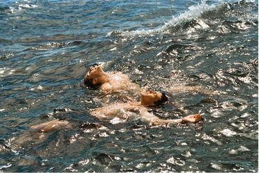
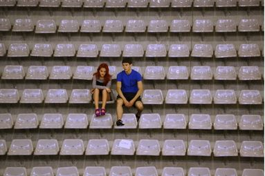

ALICE MOITIÉ
Photographe et réalisatrice, Alice Moitié s'est imposée par son univers vibrant, spontané et teinté d'humour. Avec autant d'élégance que d'esprit, son objectif capte le subtil et le sous-entendu, apportant une fraîcheur et une énergie remarquables à chacun de ses clichés.
Naviguant entre authenticité brute et esthétique léchée, elle collabore régulièrement avec de grandes marques internationales (Nike, Adidas, Givenchy, Mercedes) et signe des séries pour des publications prestigieuses comme Vogue, Vanity Fair, i-D ou GQ. Elle immortalise également les plus grandes icônes de la scène musicale actuelle, de A$AP Rocky à Miley Cyrus, en passant par Justice.